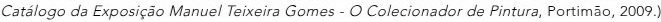

A Coleção de Pintura
"No curso das viagens realizadas até à década de 1920, Teixeira Gomes constitui uma coleção extremamente significativa de um gosto fim-de-século cosmopolita e diversificado bastante diverso dos cânones nacionais do naturalismo tardio e que configuram a maioria das coleções portuguesas então realizadas. A coleção de Teixeira Gomes foi sendo doada ao Museu Nacional de Arte Contemporânea Museu do Chiado pelo notável escritor político e diplomata em diversos anos que vão de 1924 a 1934."— Pedro Lapa
Galeria das obras pertencentes às coleções do Museu Nacional de Arte Contemporânea, Museu Nacional Soares dos Reis e Museu de Portimão (Catálogo da Exposição Manuel Teixeira Gomes — O Colecionador de Pintura, Portimão, 2009.)

Coleção de Pintura — Museu de Portimão
Para consultar o catálogo completo da exposição, visite o Museu de Portimão.